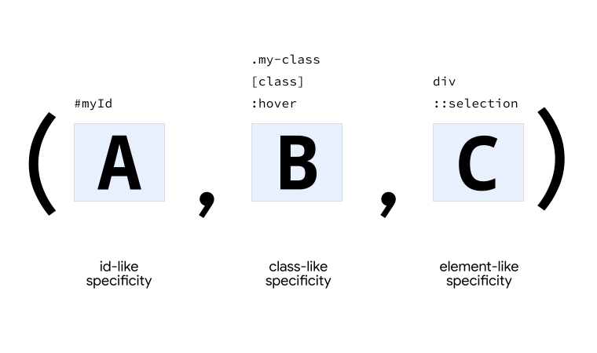
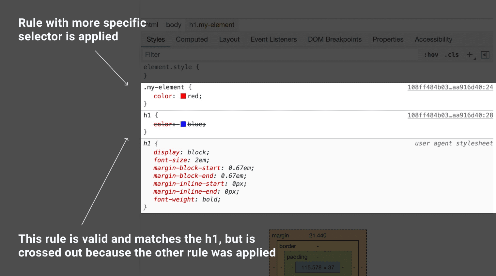
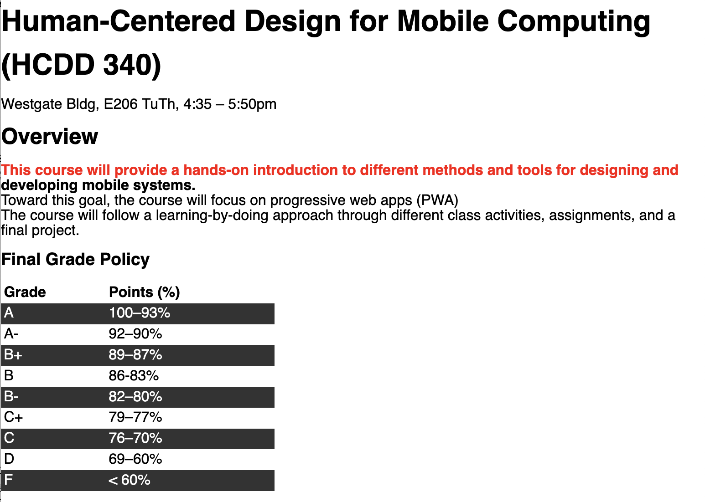

HCDD 340
CSS Intro
Fixed seating arrangement for groups

HCDD 340
CSS Intro
Cascading Style Sheets (CSS)
- Defines how different HTML elements look
- styling texts
- creating layouts (grids, multiple columns, …)
- create animation
CSS rules for styling
styles.css
from last class
section {
position: absolute;
top: 50%;
left: 50%;
margin-right: -50%;
transform: translate(-50%, -50%);
}
.orange {
color: #f0a202
}Linking to CSS rules
index.html
from last class
<head>
...
<link rel="stylesheet" href="styles.css" />
<title>Welcome to HCDD 340!</title>
</head>CSS rules contain selectors and declarations
- Select a specific items
- Apply the style (declaration) to the selected items
- property: value pairs
CSS rules contain selectors and declarations

CSS rules contain selectors and declarations
section {
position: absolute;
top: 50%;
left: 50%;
margin-right: -50%;
transform: translate(-50%, -50%);
}CSS rules contain selectors and declarations
section {
position: absolute;
top: 50%;
left: 50%;
margin-right: -50%;
transform: translate(-50%, -50%);
}Selectors
Different “patterns” to identify match elements
Universal selector (*) matches all elements
* {
margin: 0;
padding: 0;
box-sizing: border-box;
}Type selector matches corresponding HTML elements
section {
position: absolute;
top: 50%;
left: 50%;
margin-right: -50%;
transform: translate(-50%, -50%);
}Matches all <section>
elements
Type selector matches corresponding HTML elements
h4 {
font-size: 1em;
}Matches all <h4> elements
Class selector matches elements with a given class
.orange {
color: #f0a202
}styles.css
<h1 class="orange">HCDD 340</h1>
<h1>Goals</h1>
index.html
. is in CSS rules, but not in html
An element can have multiple classes
What happens in this case? ü§î
.orange {
color: #f0a202
}styles.css
<h1 class="orange another-class some-other-class">HCDD 340</h1>
<h1>Goals</h1>
index.html
Still matches (all elements containing the given class)
ID selector matches elements with the given id
#penn-state {
border: 1px solid #96BEE6;
}styles.css
<div id="penn-state">
We are!
</div>index.html
# is in CSS rules, but not in html
Attribute selector matches elements with a given attribute or a value
Select element if a given attribute is present
[data-college] {
color: #96BEE6;
}styles.css
<div data-college="IST">Information Sciences and Technology</div>
<div data-college="HHD">Health and Human Development</div>index.html
Both <div>s will match (i.e.,
attribute “college” is present)
Attribute selector matches elements with a given attribute or a value
Select element if the attribute has a given value
[data-college="IST"] {
color: #96BEE6;
}styles.css
<div data-college="IST">Information Sciences and Technology</div>
<div data-college="HHD">Health and Human Development</div>index.html
What happens here?
Only the first <div> will be
selected
You can do complex attribute matching
- prefix and suffix matching (regular expression)
- case insensitive
- See more details here
Pseudo-classes
Pseudo-classes
Select a specific state of a given element (:)
h2:hover {
color: blue;
}Change outline when <h2> is
hovered
Pseudo-classes
Select a specific state of a given element (:)
p:nth-child(even) {
background: blue;
}All even paragraphs will have blue
background
Many pseudo-classes available
:first-child:last-child:visited
Pseudo-elements
Pseudo-elements
Specific part of a selected element (::)
p::first-letter {
color: goldenrod;
font-weight: bold;
}Changes the first letter of each paragraph — check it out
Pseudo-elements
::before and ::after for inserting elements
.exciting-text::after {
content: " <- EXCITING!";
color: darkgreen;
font-weight: bolder;
}
.boring-text::after {
content: " <- BORING";
color: darkviolet;
font-weight: bolder;
}Check out the example
Grouping selectors
Apply same rule to multiple selectors
h1, h2, h3, h4, h5 {
margin: 0 0 20px 0;
line-height: 1.2;
font-weight: bold;
}Separated by commas
Combinators
Combine selectors to select elements in relation to others
- Descendant
- Child
- Next-sibling
- Subsequent-sibling
Descendant combinator
Parent and descendant selectors separated by a space
p strong {
color: red;
}All <strong> elements within
<p> elements will have red color
What happens here?
li {
list-style-type: disc;
}
li li {
list-style-type: circle;
}
css
<ul>
<li>Item 1
<ul>
<li>Subitem A</li>
<li>Subitem B</li>
</ul>
</li>html
Child combinator
Parent and children selectors separated by a >
div > p {
color: red;
}Only the direct children will be selected (more restrictive than descendant combinator)
What happens here?
span {
background-color: aqua;
}
div > span {
background-color: yellow;
}styles.css
<div>
<span>
Span #1, in the div.
<span>Span #2, in the span that's in the div.</span>
</span>
</div>
<span>Span #3, not in the div at all.</span>index.html
Check it out!
Next sibling combinator
An element immediately follows another element within same parent (+)
img + p {
font-weight: bold;
}A paragraph that immediately follows an image (within same parent) will have bold text
Subsequent sibling combinator
An
element immediately follows another element within same
parent (~)
img ~ p {
}Any paragraph that immediately follows an image (within
same parent) will have bold text
Which ones are red: S1, S3, S4?
p ~ span {
color: red;
}styles.css
<article>
<span>S1</span>
<p>P1</p>
<code>C1</code>
<span>S2</span>
<p>P3</p>
<h1>H1</h1>
<span>S3</span>
</article>
<span>S4</span>index.html
Check it out!
Class activity
We will play CSS Diner
- Work as a group
- Feel free to use AI
- How many levels can you complete?
How do the CSS rules work?
What happens if there are no CSS rules for a given page? ü§î
A browser will apply default styles
What happens when multiple rules apply?
Handling conflicts
h1 {
color: red;
}
h1 {
color: blue;
}Handling conflicts
Cascading determines which rules actually apply
- Position and order
- Specificity
- Origin
- Importance
Handling conflicts
Cascading determines which rules actually apply
- Position and order
- Immediate rule gets precedence
- Specificity
- Origin
- Importance
Position and order
Immediate rule gets precedence
h1 {
color: red;
}
h1 {
color: blue;
}The color will be blue
Immediate rule gets precedence
What’s the color of the button’s background?
button {
background: yellow;
}styles.css
...
<link rel="stylesheet"
href="/styles.css" />
...
...
<button> I am a button </button>
<style>
button { background: pink; }
</style>
</body>index.html
pink — embedded style is more
immediate
Handling conflicts
Cascading determines which rules actually apply
- Position and order
- Specificity
- Origin
- Importance
Handling conflicts
Cascading determines which rules actually apply
- Position and order
- Specificity
- More specific selectors gets precedence
- Origin
- Importance
More specific selectors gets precedence
A > B > C

More specific selectors gets precedence
What’s the button color?
.branding {
color: blue;
}
button {
color: red;
}<button class="branding">
Hello, Specificity!
</button>Blue — check it out!
More specific selectors gets precedence
A > B > C
Handling conflicts
Cascading determines which rules actually apply
- Position and order
- Specificity
- Origin
- More specific origin takes precedence
- Importance
Origin
More specific origin takes precedence

Handling conflicts
Cascading determines which rules actually apply
- Position and order
- Specificity
- Origin
- Importance
- You can use
!importantto change importance
- You can use
Why my CSS rule is not applying? ü§Ø
Why my CSS rule is not applying? ü§Ø
Use Developer Tools
- Firefox DevTools
- Computed
- Chrome DevTools
- Styles

Class activity
Starter files here
- Unzip the file
- Open the folder in VS Code
- File –> Open Folder
- Click on Show Preview
- Top right corner
- Also, open
index.htmlin Chrome/Firefox
Todos
- Only change
styles.css - Paragraph directly after an
<h2>:- bold
- the first line: red
- Even rows in a table
- background color:
#333333
- background color:

Class activity
Hints
- Paragraph directly after an
<h2>:- Which combinator to use?
- bold
- the first line: red
- pseudo element ::first-line
- Even rows in a table
- pseudo-class :nth-child